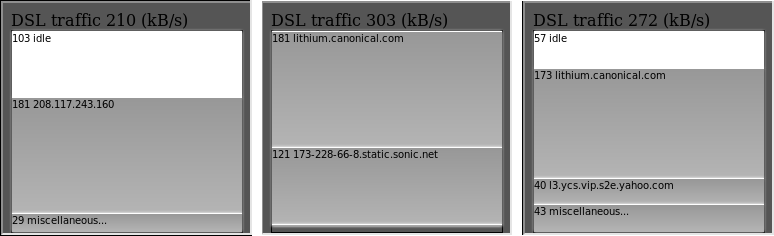
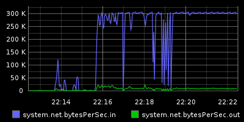

Netbars is a Python web server that watches network traffic and serves an animated widget. The height of the bar is set to your max bandwidth, and the display shows what fraction of your bandwidth is talking to what remote addresses.
It also comes with an easy way to feed the bandwidth usage stats to a graphite sever, so you can make charts like this:
projects.bigasterisk.com/netbars/netbars-1.0.tar.gz">version 1.0 - released 2011-03-04
#netbars {
background: #555555;
width:247px;
height:230px;
overflow:hidden;
}
<iframe src="http://localhost:3001/" id="netbars"></iframe>
If you run graphite
(recommended!), you might like to included netbars2graphite
daemon, which fetches the in/out totals and sends them to graphite
every 2 seconds. Graphite serves regular images, so it's easy to
include pretty history graphs in your dashboard, too.
The MIT License
Copyright (c) 2011 Drew Perttula
Permission is hereby granted, free of charge, to any person obtaining a copy
of this software and associated documentation files (the "Software"), to deal
in the Software without restriction, including without limitation the rights
to use, copy, modify, merge, publish, distribute, sublicense, and/or sell
copies of the Software, and to permit persons to whom the Software is
furnished to do so, subject to the following conditions:
The above copyright notice and this permission notice shall be included in
all copies or substantial portions of the Software.
THE SOFTWARE IS PROVIDED "AS IS", WITHOUT WARRANTY OF ANY KIND, EXPRESS OR
IMPLIED, INCLUDING BUT NOT LIMITED TO THE WARRANTIES OF MERCHANTABILITY,
FITNESS FOR A PARTICULAR PURPOSE AND NONINFRINGEMENT. IN NO EVENT SHALL THE
AUTHORS OR COPYRIGHT HOLDERS BE LIABLE FOR ANY CLAIM, DAMAGES OR OTHER
LIABILITY, WHETHER IN AN ACTION OF CONTRACT, TORT OR OTHERWISE, ARISING FROM,
OUT OF OR IN CONNECTION WITH THE SOFTWARE OR THE USE OR OTHER DEALINGS IN
THE SOFTWARE.